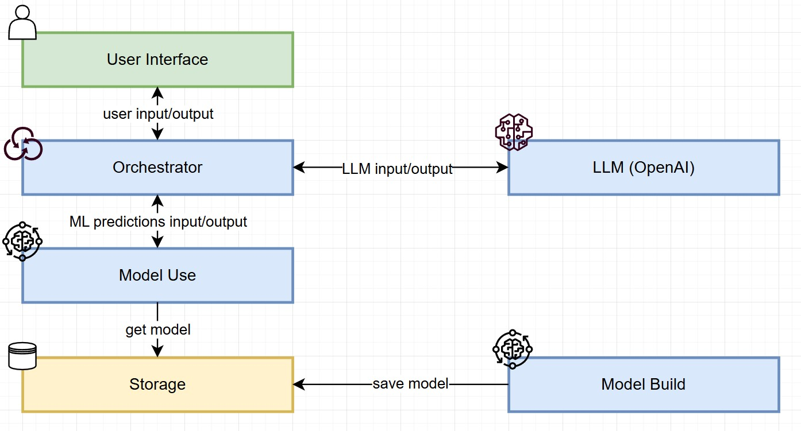
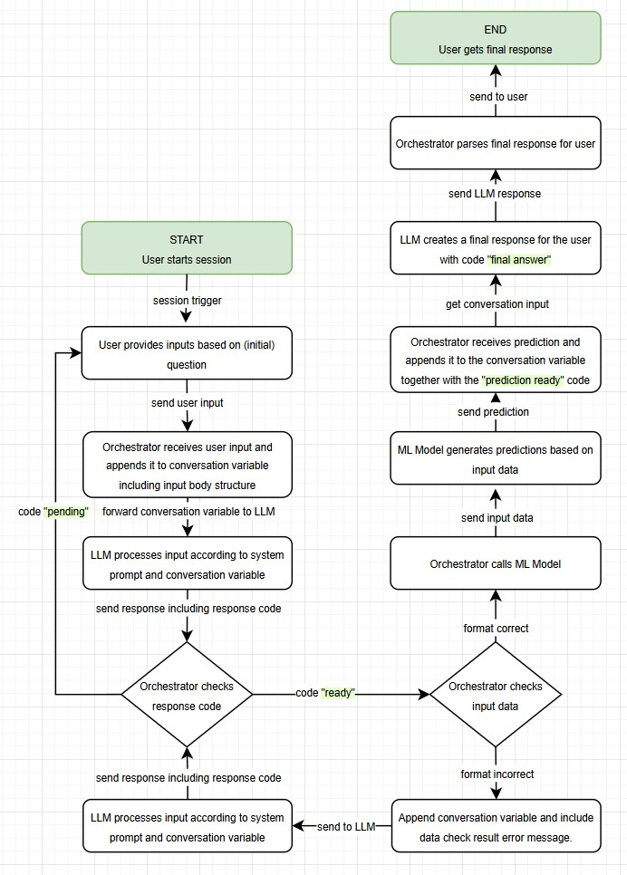

Project 2: Interactive Machine Learning Predictions with LLM Integration
Introduction
Background
A Large Language Model (LLM) is a type of artificial intelligence model trained to understand and generate human-like text. These models are built using deep learning techniques, specifically neural networks, and are trained on vast amounts of text data. Some of the most famous models are OpenAI's ChatGPT, Google's Gemini and Anthropic's Claude. Large Language Models (LLM) are are widely used for generating content, aiding research, and providing interactive AI experiences. Designed to collaborate with humans, they are particularly effective in facilitating user interaction and enhancing productivity.
Scope
This project combines the strengths of Large Language Models (LLMs) and traditional Machine Learning (ML) to create an interactive solution for classification tasks. The goal is to provide a user-friendly front-end where the LLM dynamically gathers the required input data and performs feature engineering. Once the input data is prepared, an API will invoke the ML model to perform the classification. The results are returned to the LLM, which generates a clear and meaningful output for the user.
Deliverables (High-Level)
- A simple frontend (CLI) that allows the user to communicate with the LLM.
- A properly configured LLM to ensure it can gather the required information from the user and create a valid JSON that can be used to do data predictions with the ML model.
- An Orchestrator that orchestrates the traffic between the User, LLM and Model Use layer.
- A Model Build layer that creates a classification ML model and stores it together with all relevant information.
- A Model Use layer that uses the ML model to get predictions based on input data in JSON format.
The solution will be built using an OpenAI API endpoint for the LLM capabilities an Python with TensorFlow for the machine learning capabilities. The machine learning algorithm used will be a Decision Tree (DT) algorithm for a simple classification problem. All data will be obtained from the ICU Machine Learning Repository.
Out of Scope
- Provide an option to perform multiple predictions at once.
- Allowing to change the model parameters via the user frontend.
- Storing LLM discussions (conversations are limited to the session).
- Any other additional feature that is not described in the deliverables above.
High-Level Design
Activity Diagram
